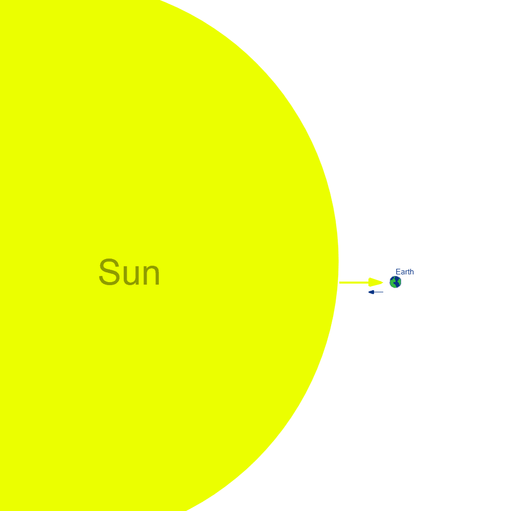

Sir Issac Newton, is an English mathematician and physist who created laws of motion that better explain how particles in the universe move. One of these laws is his law of gravitation which states how different particles in the universe attracts all the other particles described as Gravity. The law also states how this force between two objects is equal to the product of both the object's masses over the distance between the two object's squared...
Newton's Law of Gravitation also includes the gravitational constant which is represented as...
The gravitational constant mathematically expresses the gravitational force between two masses.
Mass and Distance stated by Newton's Law of Gravitation affect the gravitational force between two objects.
If the mass of one or both of the objects increase, the gravitational force between them also increases, and the opposite happens if the mass of one or both objects decreases. For example, since the Sun has much more mass than Earth, it pulls the Earth more than the Earth pulls the sun...

In this example, the Sun has applies a greater gravitational force on Earth than the force Earth is applying to the sun. This causes the Earth to orbit the sun in an ellipse. Same rules apply to the way how objects are pulled down on the Earth, called gravity.